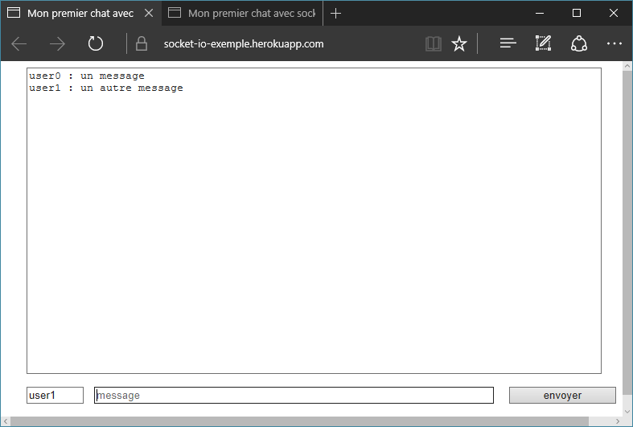

Introduction
Socket.io est une bibliothèque pour gérer des communication temps-réel entre un serveur node.js et des clients web ( ou C++ ).
Cette bibliothèque fouit plusieurs fonctionnalités intéressantes :
- compatibilité avec les différent navigateur, socket.io utilise des web-socket quand le navigateur le supporte mais peut utiliser d'autres technologies pour assurer la compatibilité avec les vieux navigateurs.
- programmation événementielle.
- transmission de données json ou binaire.
- compression des données.
Utilisation
Coté serveur
Installation
Sur le serveur node.js l'installation ce fait simplement avec le gestionnaire de packages npm.
npm install socket.io
charger la bibliothèque
Pour charger socket.io sur le serveur il suffit d'utiliser la fonction require.
var io = require('socket.io')();gestion des connexions
io.on('connection', function(socket){
// code a exécuter lors des connexions
});gestion des évènements
socket.on($nomEvenement, function () {
//traitement de l'évènement
});Généralement les évènement sont définit lors de la connexion du client.
écouter les connexion
Pour écouter les connexions sur le port $port il faut utiliser la méthode listen.
- pour une utilisation de socket.io seul
var io = require('socket.io')();
// ...
io.listen($port);- pour une utilisation de socket.io avec express
var app = require('express')();
var server = require('http').createServer(app);
var io = require('socket.io')(server);
// ...
server.listen($port, $ip)Les ports et addresses IP de l'hébergeur peuvent être récupéré avec process.env.PORT et process.env.IP.
envoyer un évènement
Les évènements sont utilisé pour communiquer entre le serveur et les clients, les évènements sont identifié par des noms et transmettent des objets.
- envoyer a tout les clients connectés
io.emit($nomEvenement, $objetAEnvoyer);- envoyer a un client
socket.emit($nomEvenement, $objetAEnvoyer);client web
Chargement du scripte
Pour utiliser socket.io coté client il suffit de charger dans la page le script fournit automatiquement par le module coté serveur.
<script src="/socket.io/socket.io.js" type="text/javascript"></script>creation d'un socket
var socket = io();gestion des évènements
socket.on($nomEvenement, function(objetRecut){
// traitement de l'evenement
};émission d'évènements
socket.emit($nomEvenement, $objetAEnvoyer);Exemples
Un chat avec socket.io
Pour cet exemple on vas utiliser socket.io avec le framework express.
1. installation des packages
npm install express
npm install socket.io
2. code serveur
var express = require('express');
var app = express();
var http = require('http').Server(app);
var io = require('socket.io')(http);
app.use(express.static(__dirname + '/www/'));
http.listen(process.env.PORT || 3000, process.env.IP || "0.0.0.0", function () {
console.log('listening');
});
io.on('connection', function (socket) {
console.log('a user connected');
socket.on('disconnect', function () {
console.log('user disconnected');
});
socket.on("message", function (message) {
if (message.text !== "") {
io.emit("message", message);
console.log(message);
}
});
});3. code client
- index.html
<!DOCTYPE html>
<html>
<head>
<title>Mon premier chat avec socket.io</title>
<script src="/socket.io/socket.io.js" type="text/javascript"></script>
<script src="/js/jquery-3.1.1.js" type="text/javascript"></script>
<script src="/js/myChat.js" type="text/javascript"></script>
<link rel="stylesheet" type="text/css" href="css/style.css">
</head>
<body onload="start()">
<textarea readonly id="messageOutput"></textarea>
<form action="" id="messageForm">
<input id="userPseudo" autocomplete="off" placeholder="pseudo"/>
<input id="messageInput" autocomplete="off" placeholder="message"/>
<button id="sendMessage">envoyer</button>
</form>
</body>
</html>- myChat.js
function start()
{
var socket = io();
$("#messageForm").submit(function(){
socket.emit("message", {pseudo:$("#userPseudo").val(),text:$("#messageInput").val()});
$("#messageInput").val("");
return false;
});
socket.on("message", function(message){
$("#messageOutput").val($("#messageOutput").val() + message.pseudo + " : " + message.text + "\n");
});
}
sources de l'exemple, demonstration